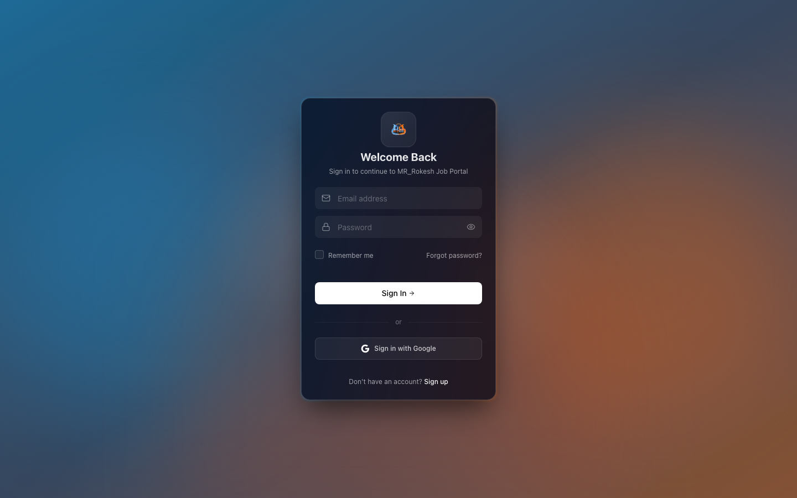

Step by step
- Go to the app URL. You'll land on the Sign In screen.
- Type the email address you registered with.
- Type your password. Use the eye icon to show/hide it if you want to check it.
- Optionally tick 'Remember me' to stay signed in on this device.
- Click 'Sign In'. On success you're taken straight to your Dashboard.
- New here? Click 'Sign up' at the bottom to create an account first.
Fields & controls
- Email address — The email you registered with.
- Password — Your account password; the eye icon toggles visibility.
- Remember me — Keeps you signed in on this device.
- Forgot password? — Link to recover access to your account.
- Sign In button — Submits your credentials and opens the Dashboard.
You can
- Sign in with email and password
- Toggle password visibility and 'remember me'
- Navigate to Sign up or Forgot password
You cannot
- Sign in with wrong credentials (shows 'Invalid email or password')
- Use Google sign-in (button present but not wired to a live OAuth flow)
- Reach the dashboard without a valid account